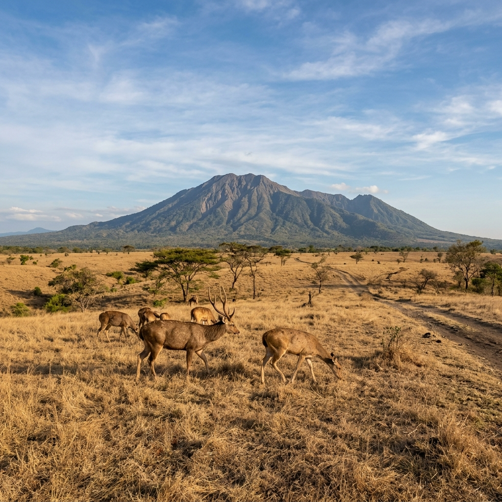

Pioneering Breakthroughs in Renewable Energy Research

Penelitian energi terbarukan terus melahirkan inovasi yang membuka jalan bagi sistem energi lebih bersih dan lebih terjangkau. Dari panel surya efisiensi tinggi hingga teknologi penyimpanan baterai masa depan, setiap terobosan membawa kita lebih dekat ke transisi energi global.
Inovasi Panel Surya dan Efisiensi
Perkembangan material fotovoltaik seperti perovskite dan tandem cells meningkatkan efisiensi penyinaran dan menurunkan biaya per watt. Penelitian terkini fokus pada stabilitas jangka panjang dan proses manufaktur yang dapat diskalakan.
Penyimpanan Energi dan Grid
Teknologi penyimpanan (baterai solid-state, flow batteries, dan hydrogen storage) memainkan peran penting untuk mengatasi intermitensi sumber terbarukan. Integrasi dengan smart grid dan manajemen beban memungkinkan pemanfaatan energi yang lebih optimal.
Pilot Projects dan Implementasi Skala Besar
Banyak pilot project menunjukkan bahwa kombinasi pembangkit surya, angin, dan penyimpanan bisa memenuhi permintaan komunitas kecil hingga menengah. Tantangan utama adalah investasi awal dan kesiapan infrastruktur transmisi.
Dampak Sosial dan Ekonomi
Penerapan energi terbarukan menciptakan lapangan kerja baru, mengurangi ketergantungan impor bahan bakar fosil, dan meningkatkan ketahanan energi lokal. Kebijakan insentif serta program pelatihan tenaga kerja lokal akan mempercepat adopsi teknologi ini.
Teknologi Masa Depan dan R&D
Penelitian terkini tidak hanya meningkatkan efisiensi, tetapi juga menurunkan biaya produksi teknologi terbarukan. Contohnya, pengembangan material fotovoltaik yang lebih murah dan teknik manufaktur volume tinggi dapat membuat panel surya lebih terjangkau untuk komunitas terpencil.
Studi Kasus: Desentralisasi Energi di Komunitas
Beberapa komunitas di Indonesia dan negara berkembang lainnya telah berhasil menerapkan solusi hybrid yang menggabungkan panel surya, baterai penyimpanan, dan mikrogrid. Hasilnya menunjukkan peningkatan ketersediaan listrik, penurunan biaya energi rumah tangga, dan peluang usaha lokal yang baru.
Kebijakan, Insentif, dan Pembiayaan
Pembiayaan inovatif seperti green bonds, skema feed-in tariff, dan subsidi target membantu menutup kesenjangan investasi awal. Pemerintah dan sektor swasta perlu bekerja sama untuk menciptakan ekosistem pendukung — termasuk standar teknis dan program pelatihan.
Implementasi di Indonesia
Indonesia memiliki potensi energi surya dan angin yang signifikan di wilayah tertentu. Tantangan utama meliputi infrastruktur transmisi, biaya investasi awal, dan kebutuhan akan pelatihan tenaga kerja lokal. Dengan perencanaan yang tepat, proyek skala menengah dapat direplikasi di berbagai pulau untuk meningkatkan akses energi.
Langkah Aksi untuk Stakeholder
- Pemerintah: menetapkan kebijakan insentif, mempermudah perizinan, dan memperkuat jaringan transmisi.
- Sektor swasta: investasi dalam R&D, model pembiayaan inovatif, dan kemitraan publik-swasta.
- Komunitas: pelatihan operasional dan pemeliharaan, serta pembentukan koperasi energi lokal.
Kesimpulan
Energi terbarukan adalah kunci untuk masa depan yang lebih bersih dan berkelanjutan. Dengan teknologi yang terus berkembang, dukungan kebijakan, dan pembiayaan yang tepat, transisi ini dapat membawa manfaat ekologis dan ekonomi yang besar. Tindakan terkoordinasi sekarang akan mempercepat manfaat tersebut bagi masyarakat luas.
Sumber & Bacaan Lanjut
- International Energy Agency – Renewable Energy Reports
- Jurnal Energi Terbarukan dan Kebijakan Energi
- Studi kasus lokal pada proyek mikrogrid di Indonesia